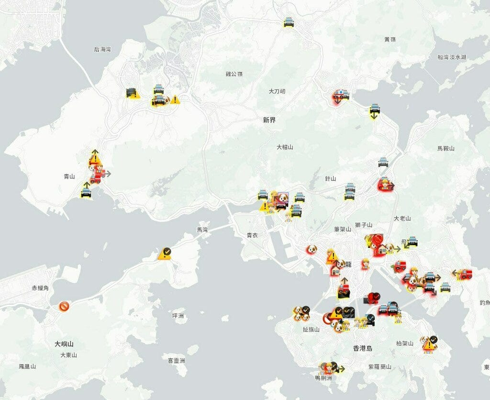
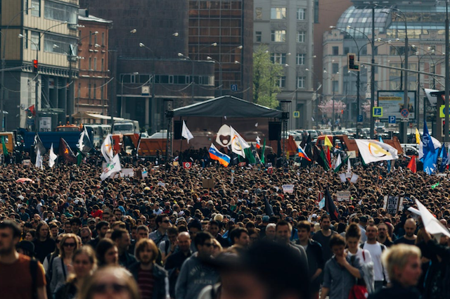

Datasets
I collated a few datasets around protests, social media, and technology steering collective actions. I used web-scraping to gather the core data for these, sometimes corroborated by additional sources. In some sense they are digital social movement archives not available online anymore. They are available for public use either directly or on demand for research purposes.

Hong Kong Protests Dataset (2019-20)
A granular, crowdsourced data covering protest activity in Hong Kong during 2019-2020. The dataset is geospatial and time-granular (3-10 minute intervals), enabling fine-grained analysis of where and when events unfolded.
See description on Medium.

VK Anti-Government Protest Pages Archive (2017-18)
A dataset derived from my 2018 archive of anti-government protest event pages on VK, a popular Russian social media platform. The collection is aggregated and anonymized for research and analysis.